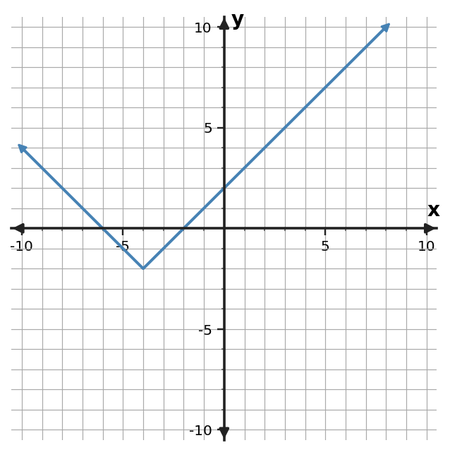

1. Choose an efficient method and solve $(x-2)(x+3)=0$.
2. Choose an efficient method and solve $(x-3)(x+4)=0$.
3. Choose an efficient method and solve $(x-4)(x+5)=0$.
4. Choose an efficient method and solve $(x-5)(x+6)=0$.
5. Choose an efficient method and solve $x^2+4x=12$.
6. Choose an efficient method and solve $x^2+6x=16$.
7. Choose an efficient method and solve $x^2+8x=20$.
8. Choose an efficient method and solve $x^2+10x=24$.
9. Choose a dependable method and solve $3x^2+0x-10=0$ exactly.
10. Choose a dependable method and solve $2x^2+x-11=0$ exactly.
11. Choose a dependable method and solve $3x^2+2x-12=0$ exactly.
12. Choose a dependable method and solve $2x^2+3x-13=0$ exactly.
13. Choose the most efficient first method for each equation and give a one-phrase reason.
| Equation | First method |
|---|---|
| $(x-2)(x+5)=0$ | ? |
| $x^2+12x=1$ | ? |
| $3x^2+2x-7=0$ | ? |
14. Compare solving $x^2-25=0$ by factoring and by the quadratic formula. Which is more efficient and why?
15. A modeling task needs answers rounded to the nearest tenth. Explain why it is still useful to keep an exact radical answer until the final step.
16. A student says, “I always use the quadratic formula because it always works.” Critique this strategy for $(x-7)(x+1)=0$.
17. Factor $x^2-49$.
18. Factor $x^2+12x+36$.
19. Before factoring $9x^2-25$, identify the special pattern.
20. Explain why $x^2+10x+25$ fits a perfect-square-trinomial pattern.
21. A table has constant first differences. Which familiar family is supported most strongly?
22. A table has a constant multiplicative ratio but not constant first differences. Which familiar family is supported?
23. Use the graph shown. Which familiar function family is the best match? Justify with one graph feature.

24. A table has constant second differences. Which familiar family is supported, and why is “the graph is curved” weaker evidence?